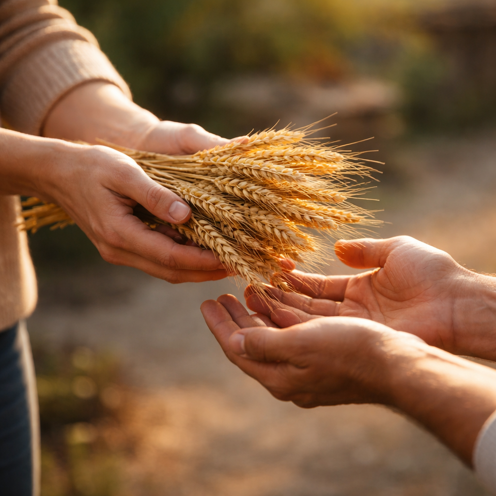

Banco do Brasil
Agência: 3071-6
Conta: 10396-9
Contribuição com propósito
Sua contribuição apoia a missão da igreja e o cuidado com a comunidade. Com transparência e responsabilidade, investimos em pessoas, discipulado e ações sociais.
“Cada um contribua segundo propôs no seu coração; não com tristeza, nem por constrangimento; porque Deus ama ao que dá com alegria.”
2 Coríntios 9.7
08.680.645/0001-24Sua contribuição fortalece projetos de restauração, evangelismo e cuidado com famílias.
Esta doação é destinada à compra de cestas básicas de alimentos para famílias necessitadas da comunidade. Todos podem contribuir pelo link.
No campo de comentário da operação, descreva que se trata de uma doação para o Projeto Celeiro.
08.680.645/0001-24
Caso prefira, você também pode contribuir por depósito ou transferência bancária.
Agência: 3071-6
Conta: 10396-9
Agência: 2611
Conta: 20554-9
As contribuições apoiam ações ministeriais, discipulado e cuidado com famílias. Em caso de dúvidas sobre ofertas e contribuições, fale com a equipe da igreja. Se desejar contribuir para uma finalidade específica, entre em contato conosco.
Fale com nossa equipe e teremos prazer em orientar você.
E-mail: contato@ccrv.com.br
WhatsApp: +55 (21) 970610902
Endereço: Rua Voluntários da Pátria 57, Botafogo, Rio de Janeiro, RJ